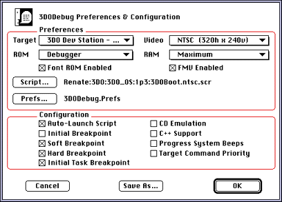

Figure 1: Preferences and Configuration dialog box.
Preferences dialog pop-ups
The following table lists all pop-up menus in the Preferences dialog and explains how to use them. Note that you can download a Flash ROM with the ROM option
Table 1: Debugger Preferences pop-up menus.
--------------------------------------------------------
Item |Description
--------------------------------------------------------
Target |Lets you choose among several 3DO
|Stations or between a 3DO Station
|and a 3DO Development Card,
|depending on what's hooked up to
|your Macintosh.
--------------------------------------------------------
ROM |Lets you change modes, download a
|new system ROM, or download a new
|Font ROM.
|* Debuggerenables Debugger mode
|* Flashenables the ROM currently
|in flash ROM (disabled for 3DO
|Developers' Card)
|* Download Systemprompts for a
|system ROM image to download
|(disabled for 3DO Developers'
|Card)
|* Download Fontprompts for a font
|ROM image to downloadIf you are
|running in stand-alone mode using
|one ROM file and then want to
|switch to using the other ROM
|file, you need to select Debugger
|mode in between.
--------------------------------------------------------
Video |Lets you choose between NTSC and
|PAL using a pop-up menu.
--------------------------------------------------------
RAM |Lets you set available memory (3DO
|Station only). You have the
|following choices:
|* Standard2 MB DRAM and 1 MB VRAM
|* Maximumall available memory
|(stock stations/cards have 2/2)
|* Minimum1/1 (probably never used)
|* Minimum-VRAMuses the maximum
|available memory for DRAM and 1 MB
|for VRAM
|* Minimum-DRAMuses the maximum
|available memory for VRAM and 1 MB
|for DRAM
--------------------------------------------------------
Font ROM enabled |Enables the second flash ROM for
|use as a Kanji font ROM.
--------------------------------------------------------
FMV enabled |Currently not implemented.
--------------------------------------------------------
Script |Lets you select a script to
|execute and makes that script part
|of the Preferences.
--------------------------------------------------------
Prefs |Lets you select a Preferences file
|and makes that file part of the
|Preferences.
--------------------------------------------------------
Preferences dialog Configuration checkboxes
The following table lists all check boxes available in the Preferences window:
Table 2: Preferences dialog check boxes
--------------------------------------------------------
Check box |Description
--------------------------------------------------------
Auto-Launch Script |Automatically executes the script
|you ran last. To initially select
|a script, use the Script button in
|the Preferences dialog. If you
|don't, you will be prompted for a
|script to execute.
--------------------------------------------------------
Initial Breakpoint |Sets a breakpoint before executing
|the operating system files.
--------------------------------------------------------
Soft Breakpoint |Check this option to stop at
|breakpoints indicated by the
|Debugger() command.
--------------------------------------------------------
Hard Breakpoint |Check this option to stop at
|breakpoints indicated by the
|Breakpoints() command.
--------------------------------------------------------
Initial Task |Sets a breakpoint before main() of
Breakpoint |the debugged task.
--------------------------------------------------------
CD Emulation |Check this option when working
|with a cdrom.image file generated
|by the layout tool. The Debugger
|introduces delays to better
|simulate transfer rate.
--------------------------------------------------------
C++ Support |Provides rudimentary C++ support
|by using name unmangling. Don't
|check this option unless you are
|using C++, symbol lookups are much
|slower.
--------------------------------------------------------
Progress System Beeps|By default, the Macintosh sounds
|an alarm each time a prompt is
|sent to the Terminal window. This
|checkbox turns off that sound.
--------------------------------------------------------
Target Command |Used in conjunction with ARIA
Priority |requests when the Debugger is in
|the background. This checkbox will
|be removed in the future.
--------------------------------------------------------